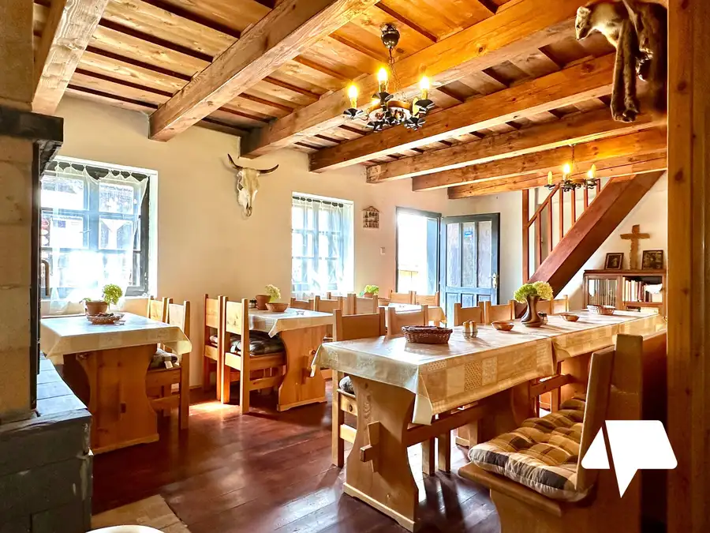
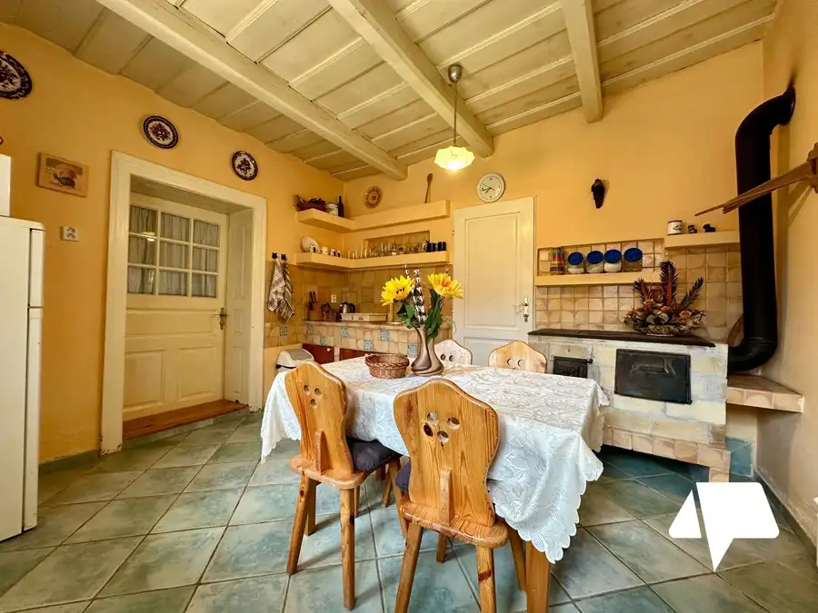
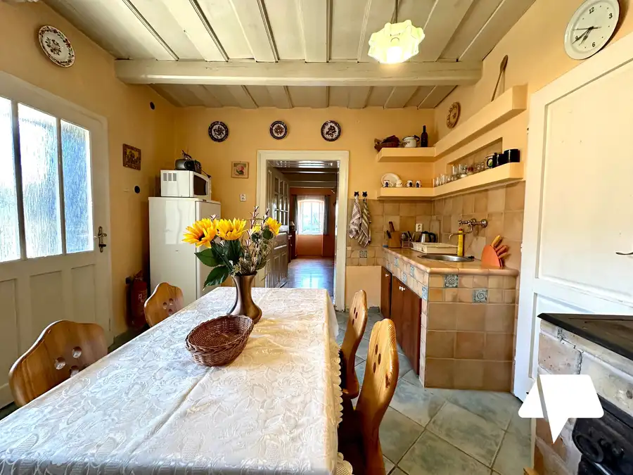
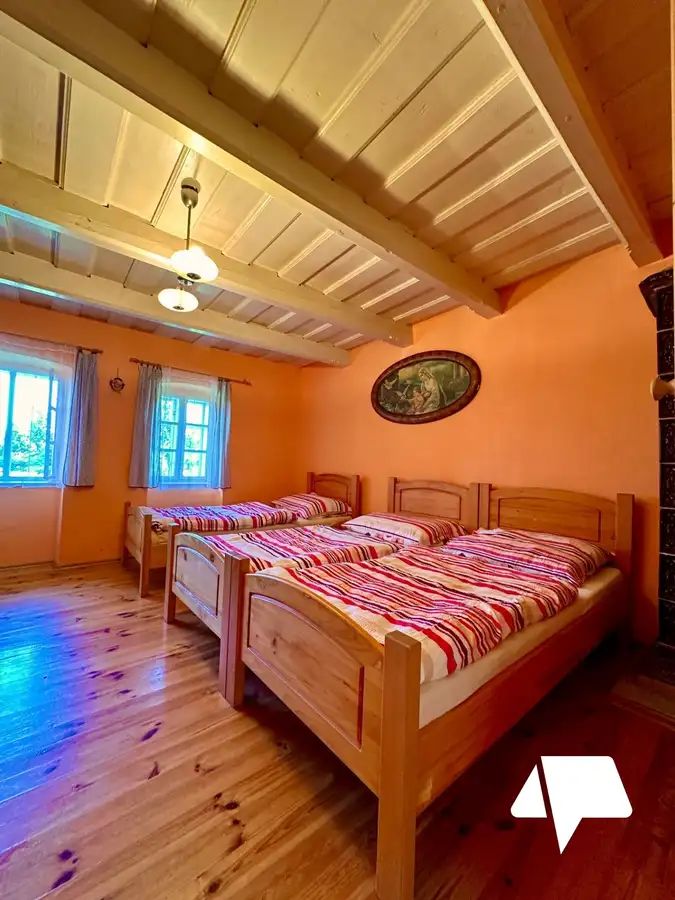
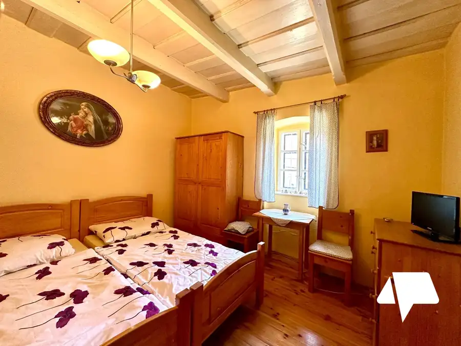
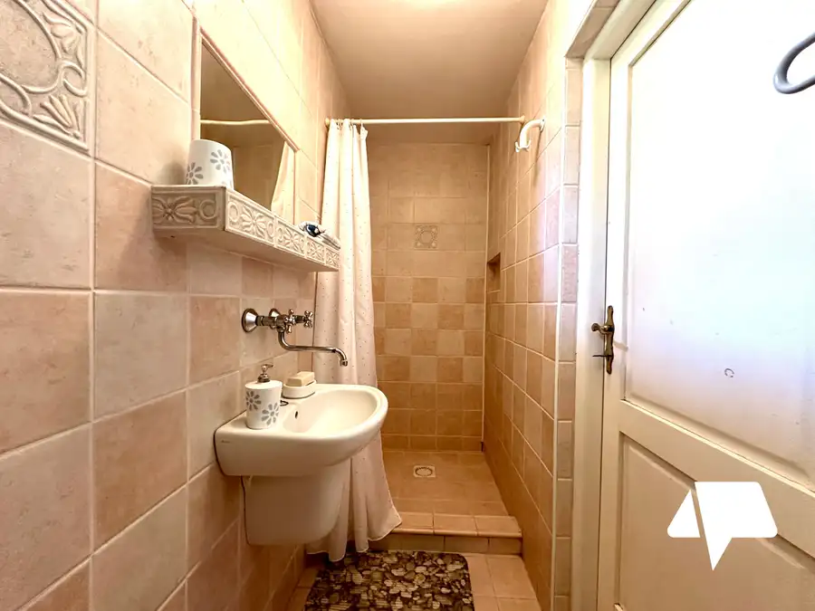
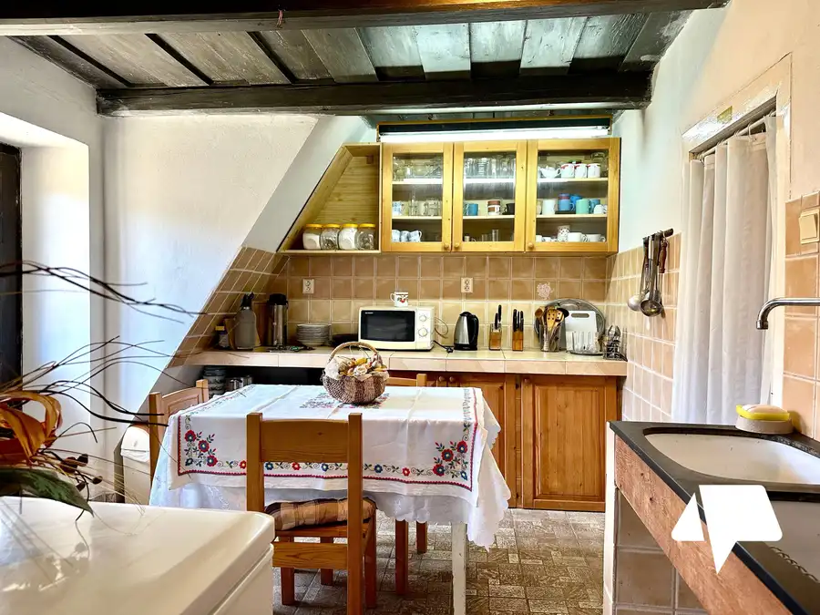

Predaj vidieckej usadlosti s rozľahlými pozemkami v obci Čechy.
Čechy







- Plocha200 m²
- StavČiastočná rekonštrukcia
O nehnuteľnosti
Na predaj unikátna vidiecka usadlosť v obci Čechy (len 8 km od obce Podhájska) ponúka obrovský pozemok 41 892 m², historický i tehlový dom s bohatou kapacitou lôžok a súkromný lesík s lúkami. Predstavuje ideálne miesto na podnikanie, agroturistiku alebo pokojné rodinné bývanie v lone prekrásnej prírody.Hlavné prednosti usadlosti•Rozloha a súkromie: Pozemok s výmerou cez 41-tisíc m² zahŕňa lúky, pasienky a vlastný lesík.•Kapacita a priestor: Historický dom s veľkou spoločenskou miestnosťou pre 24+ ľudí, množstvo izieb a lôžok pre hostí.•Inžinierske siete: Elektrina, plyn, obecná voda + vlastná studňa, 3x žumpa.•Lokalita: Pokojný okraj obce Čechy s výbornou dostupnosťou do Nitry (50 km) či Nových Zámkov (22,5 km).Dispozícia a vybavenie budov•Historický dom (hlinená stavba): Predná časť: kuchyňa, kúpeľňa, dve izby (4-lôžková a 3-lôžková). Zadná časť: kuchyňa, kúpeľňa, 3x WC, veľká spoločenská miestnosť s krbom (pre 24+ osôb), podkrovie s 5 lôžkami.•Zadný dom (tehlová stavba): Hlavná časť: priestranná kuchyňa, kúpeľňa, podkrovné izby (4-lôžková, 2-lôžková). Samostatná jednotka: 1 lôžko, kuchynský kút, kúpeľňa so sprchou a WC. Dve 2-lôžkové izby: samostatný vstup z dvora, vlastné hygienické zázemie.•Hospodárske budovy: Dotvárajú pravý vidiecky štýl a ponúkajú ďalší potenciál.Voľný čas a okolie•Termálne kúpalisko Podhájska: Liečivá voda vzdialená len 8 km.•Turistika a história: Zrúcaniny kláštora Mariánska Čeľaď (4,7 km), či lokálne cyklotrasy.•Šport a relax: Rybník v obci, zimný lyžiarsky vlek s umelým zasnežovaním, ihriská.Základné informácie o nehnuteľnosti•Vlastníctvo: osobné•Výmera: 41 892 m2•Teritórium: Intravilán, extravilán•Terén pozemku: svahovitý•Umiestnenie: na okraji obce•Rok poslednej rekonštrukcie: 2012•Prístupová cesta: asfaltováVlastné lúky, pasienky, lesík ponúkajú súkromie a priestor na množstvo aktivít, napr. rodinné oslavy, firemné akcie, spoločenské stretnutia, eventy pod šírim nebom alebo remeselné aktivity.Výnimočná investícia pre tých, ktorí hľadajú pokoj, priestor, prírodu a podnikateľskú príležitosť!Uvedená cena je vrátane provízie realitnej kancelárie. Zabezpečíme Vám kompletný právny a poradenský servis. Naši odborníci v Nitrianskej realitnej kancelárii vám pomôžu aj s finančným poradenstvom a vybavením hypotekárneho úveru.Vypočítajte si výšku mesačnej splátky hypotéky na našej kalkulačke tu: https://profibroker.sk/hypoteka/Šťastie je doma.V prípade záujmu o obhliadku nás neváhajte kontaktovať.Mgr. Daniela Maťková+421 905 546 000matkova@nitrianskereality.com
Parametre
- Druh
- Vidiecky dom
- Dátum zverejnenia
- 23. 07. 2026
- Energetický certifikát budovy
- nie je
- Plocha pozemku
- 41892 m²
- Počet nadzemných podlaží
- 2
- Rok kolaudácie
- 2012
- Rok výstavby
- 1900
- Stav nehnuteľnosti
- Čiastočná rekonštrukcia
- Terén pozemku
- Svahovitý
- Typ
- Predaj
- Typ konštrukcie
- Hlinená, Tehlová
- Zastavaná plocha
- 1 m²
- Úžitková plocha
- 200 m²